- 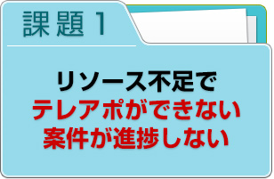
- 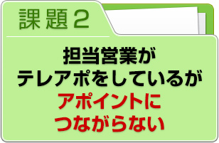
- 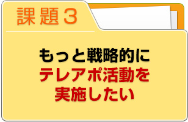
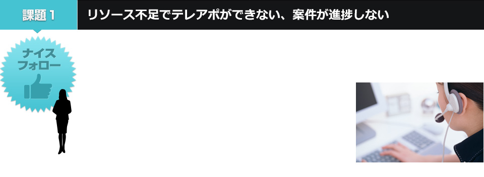
営業担当者に本来の業務に集中してもらいつつ、
初期対応～アポイントメントは当社スタッフにおまかせください！
これまでの実績や蓄積されたノウハウを活かし、どのような会話をすればよいのか一緒に考え、応酬話法のシートの作成など、準備も同時におこないます。担当スタッフはコール制限を設けることなく、活動内に何度でもアプローチをおこなうため対応が途切れません。毎日の進捗を随時報告し積極的にPDCAをまわすことで、営業担当者の手間は増やしません。
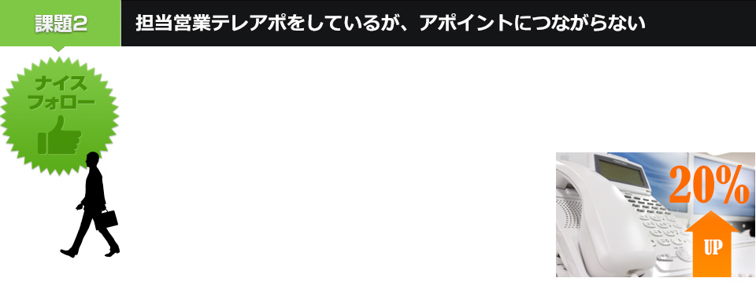
一般的なテレコールとは違い、
ITスキルを持っている担当者が従事するため、
約20%以上のアポイント取得が可能！※当社実績値による。
担当者に直接アプローチできる割合は７０〜８０％、と高い接続率を実現しています。直接会話によるアプローチで結果的にアポイント率が上がります。もちろん「３コール」などの制限はありません、何度でも担当者接続を試みることが可能です。さらに貴社の名前で電話をし、ITの話がわかる担当スタッフが交渉することでクライアントの信用につながります。
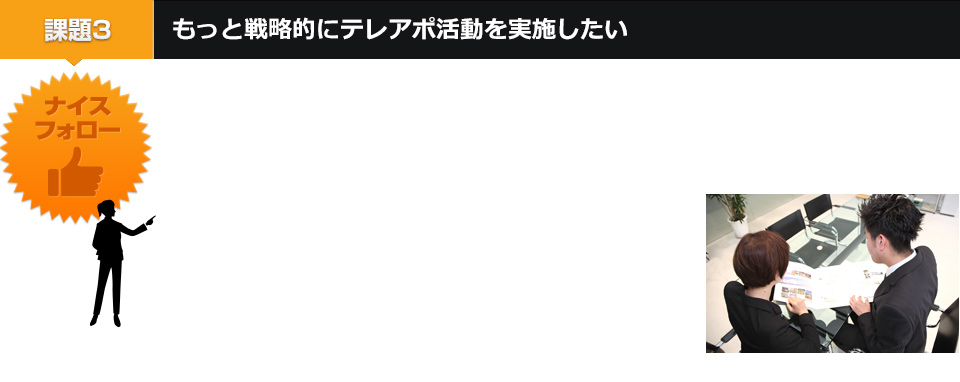
テレコールだけで終わりではありません！
全てのコールを記録し、レポートを作成するため
今後の改善につながります！
取得リードの効果測定をおこない、コールログの記録から会話の中で「課題訴求に共感を得られていたか」など、状況の把握が容易です。またレポートも作成しますので、アンケートでは回答いただけなかったお客様の情報も入手できますし、温度感の低いお客様の場合でも、その理由の分析をしますので今後の改善に役立ちます。
ご質問はお気軽に！フォローコールで解決できる理由をお伝えいたします！！
- 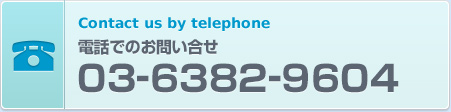
- 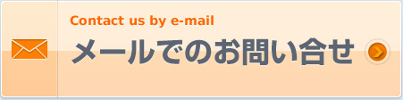
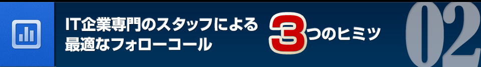
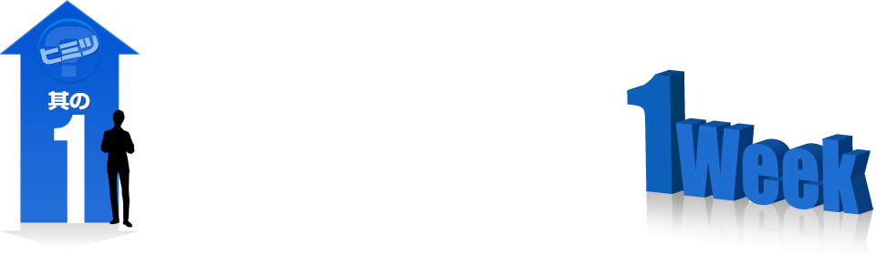
専任スタッフ、教育ナシ、最短1週間での活動開始！
| ・ | 過去に、５００社のクライアント、１０００件のプロジェクト実績があるため 、商材の資料を見ただけで活動を開始できる場合もあります。 |
| ・ | 例えばお客様独自の商品についても勉強会を実施していただくことで、直ちにやり取りへと反映しますので、極めて短い準備期間でのスタートが可能となります。 |
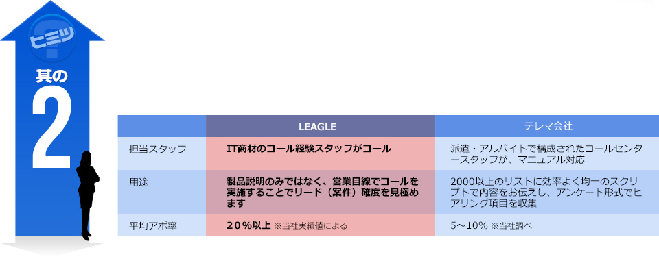
比べてください、派遣や一般的なテレマ会社との違い！
| ・ | ITスキルを持った専任スタッフが、皆様と同じゴールを目指して活動します。 |
| ・ | これまで数多く、大手企業のインサイドセールスを実施してきた実績があります。 |
| ・ | スタッフが経験豊富であるため、企業にあったトークが可能です。また準備した応酬話法から外れた話にも、対応できる応用力を備えています。 |
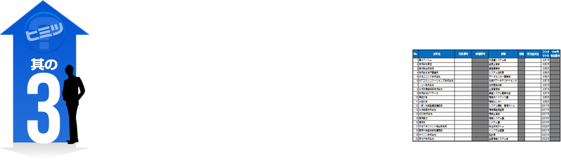
アプローチ先を見極めリードを精査
管理～改善も期待できます！
| ・ | アプローチ先の温度感を見極め、より確度の高いアポイントを増やします。 |
| ・ | 都度、状況の確認をおこない、ポテンシャルをチェックします。 |
| ・ | 次回のフォローするタイミングをヒアリングし、チャンスロスをなくします。 |
| ・ | 温度感の低いアプローチ先を分析をし、今後の改善に活かします。 |
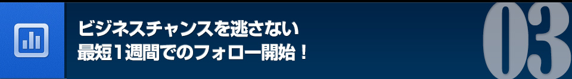
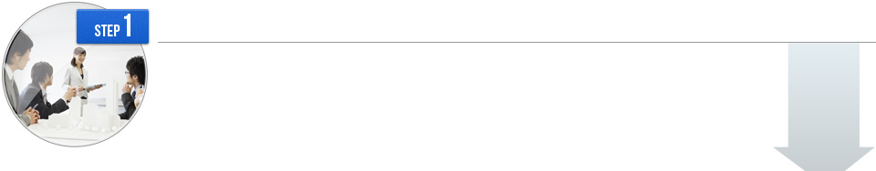
展示会/セミナー/Ｗｅｂ媒体
クライアント側で展示会やセミナーの開催などを企画・開催することで、来場者へのアンケートや名刺交換をおこない、自社の製品やサービスに興味を持つアプローチ可能な企業担当者のリストを収集します。
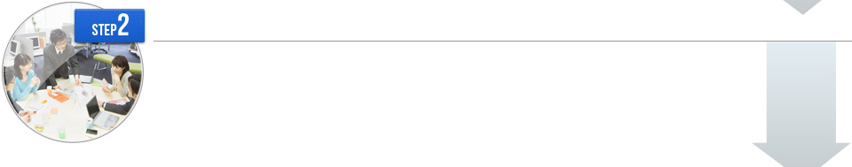
クライアントのマーケティング部・営業部と共同で作業を実施
事前に１時間程度の勉強会を実施してもらい、担当スタッフが製品・サービスの内容をキャッチアップします。その際、競合や優位点など訴求に関するポイントを確認し、その後応酬話法を作成、取得リードのフォローの可否を精査します。
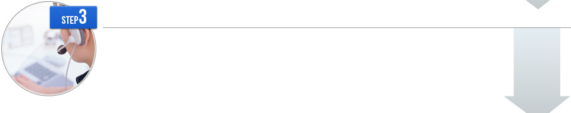
弊社内設置の新規コール部隊
ITスキルをもった担当スタッフがリストに対してフォローコールを実施します。今まで経験した同様の商材やサービスに近しいものであれば、資料を確認する程度でいち早くコールが始められます。
ヒアリング・見極め・アポイント
担当スタッフが企業担当者に情報をヒアリングし、状況を把握して営業担当へつなぎます。この時、各案件を見極めつつ、アポイントを取得していきます。


- ２ヶ月かけてリードを取得する（毎日数件づつリードがとれる）ため、日々タイムリーな対応をもとめられたが、他の業務もあるため毎日のフォローが難しい。また、合間の作業になってしまい、担当者がなかなかつかまらない。
- 毎日あがってくるリードに対して即時でフォローを実施つかまらない担当者は数日間しっかりおいかけて接続しフォローができた。
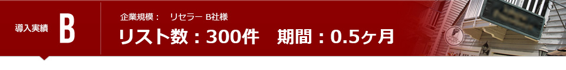
- 予定よりもたくさんのリードがとれたが、フォローするリソースが確保できない。できるだけ早くフォローしたいが、社内にはその体制がない。
- 依頼先からの製品資料を確認し「明日からでもコールできますと回答」。既にメーカーとの実績があり製品の概要を把握していたので、微調整のみでコールが開始できた。急な対応だったが、社内のリソースの調整でスタッフを増員し短期間で終了できた。
- 年間を通じて大量のリストを取得したものの、案件の管理や営業に引き渡したリードがどうなったのか、追いかけられていない。また、全てにフォローができないので、アプローチ先が沈んでしまう。
- まず、会社の規模や業種を見ながら、商材にあった企業を優先的にコールしてホットリードを抽出。自社担当が行くものとパートナーにお願いするものを切り分けて、できるだけ多くのアポイントを発掘した。
営業資料作成の要望もビーダッシュにお任せ下さい！
パンフレット・リーフレット、PPT資料、事例・取材、ホワイトペーパー、など
IT企業を中心にプロモーションとクリエイティブのお手伝いを行っています。3桁を数える企業様との取り組みや4桁に及ぶ製品やソリューションの数々と向き合い、多くの実績を収めています。
リードを取るために必要な資料、WEBページの作成やその先にあるパンフレットやサイト構築に至るまで、「効果的」なツールのご提案を差し上げています！
必要であれば、是非お声がけください！
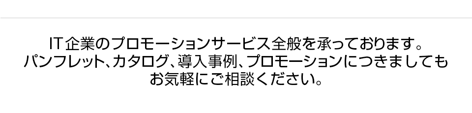